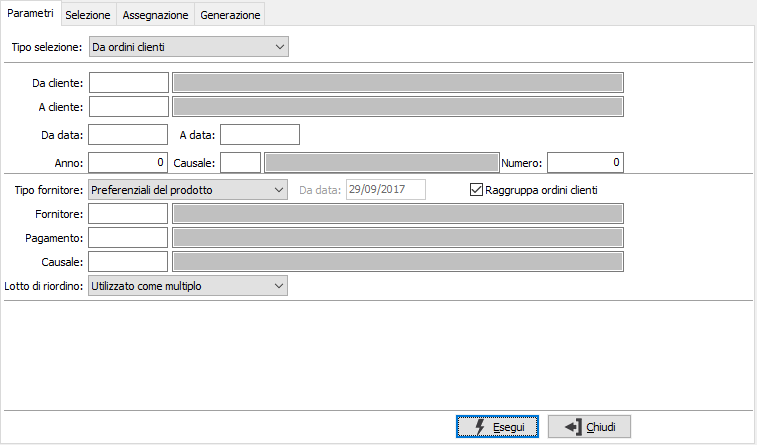
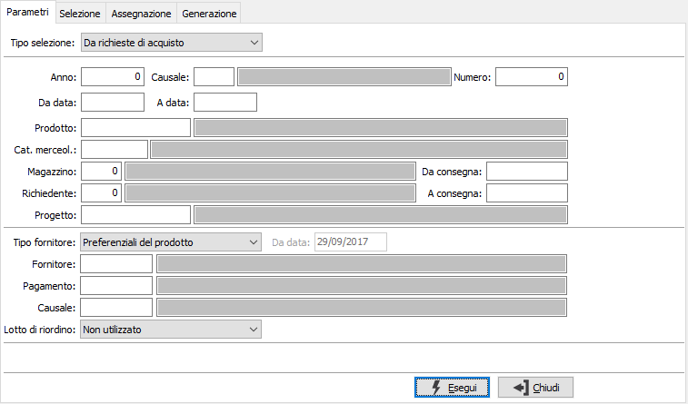
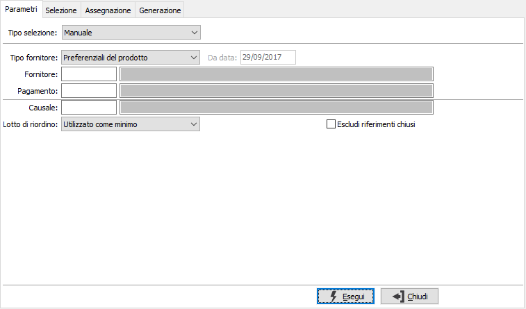

Richiesta parametri
La richiesta parametri si diversifica a seconda che si utilizzi la generazione da ordini clienti, la generazione da richieste di acquisto oppure la generazione manuale; il campo tipo selezione determina il tipo di selezione dei dati per la generazione delle richieste di acquisto. Se non sono presenti i moduli necessari al funzionamento della procedura, sarà presente solo la selezione manuale; se è presente un solo modulo la scelta del tipo selezione sarà limitata, oltre alla selezione manuale, al solo modulo presente (ordini clienti o richieste di acquisto).
Saranno analizzate le righe non descrittive di ordine ancora da evadere, che non abbiano già generato ordini fornitori, richieste di acquisto o richiesta di offerta in qualsiasi stato di esito.

DA CLIENTE: eventuale codice del cliente, presente in anagrafica clienti, da cui si vuole iniziare la selezione. Confermando a vuoto, la selezione inizia dal primo cliente valido. Sul campo sono attive le funzioni di ricerca (F9).
A CLIENTE: eventuale codice del cliente, presente in anagrafica clienti, con cui si vuole terminare la selezione. Confermando a vuoto, la selezione termina con l’ultimo cliente valido. Sul campo sono attive le funzioni di ricerca (F9).
DA DATA: eventuale data da cui deve iniziare l’analisi dei documenti relativamente ai precedenti parametri di selezione. Confermando a vuoto, l’analisi inizia con il primo documento valido.
A DATA: eventuale data con cui si desidera terminare l’analisi dei documenti relativamente ai precedenti parametri di selezione. Confermando a vuoto, l’analisi si conclude con l'ultimo documento valido.
ANNO: indica l'anno degli ordini a cui si vuole limitare la selezione.
CAUSALE: eventuale codice della Causale ordini a cui si vuole limitare la selezione. Sul campo sono attive le funzioni di ricerca (F9).
NUMERO: indica il numero dell'ordine a cui si vuole limitare la selezione, in combinazione con anno e/o causale.
TIPO FORNITORE: definisce il metodo di assegnazione del fornitore: valori possibili: preferenziali del prodotto, ultimo fornitore movimentato dal prodotto, manuale; il prodotto è riferito a quello presente sulle righe che saranno selezionate.
RAGGRUPPA ORDINI CLIENTI: non considera l'ordine cliente come criterio di raggruppamento ed utilizza solo il fornitore (casella con segno di spunta), altrimenti utilizza oltre al fornitore anche l'ordine cliente come criterio di raggruppamento (casella vuota).
FORNITORE: in caso di tipo fornitore manuale, è il codice del fornitore per cui deve essere generata la richiesta, altrimenti viene utilizzato come filtro sull'elenco di fornitori elaborato in base al tipo (preferenziali o ultimo movimentato). Sul campo sono attive le funzioni di ricerca (F9).
PAGAMENTO: codice del pagamento da impostare sulle richieste che saranno generate; se viene lasciato vuoto sarà assegnato quello indicato sull'anagrafica del fornitore; il dato sarà comunque modificabile in fase di generazione. Sul campo sono attive le funzioni di ricerca (F9).
CAUSALE: codice della causale con cui sarà generata la richiesta, viene proposta quella definita in configurazione. Se viene lasciata vuota sarà assegnata quella indicata sull'anagrafica del fornitore. Sul campo sono attive le funzioni di ricerca (F9).
LOTTO DI RIORDINO: definisce come gestire la quantità in relazione al lotto di riordino del prodotto:
utilizzato come minimo: la quantità non sarà mai inferiore al lotto di riordino se diverso da zero;
utilizzato come multiplo: la quantità sarà calcolata sempre come multiplo (arrotondata per eccesso) del lotto di riordino se diverso da zero;
non utilizzato: non sarà mai utilizzato il lotto di riordino, né come minimo né come multiplo.
Generazione da richieste di acquisto
Saranno analizzate le righe non descrittive di richiesta di acquisto che, in base alla relativa causale possano generare richieste di offerta, non abbiano già generato ordini fornitori o richiesta di offerta in qualsiasi stato di esito. Inoltre la generazione delle richieste di offerta non è utilizzabile da tutti gli utenti, ma solo da quelli che risultano il diretto responsabili dell'accettazione della richiesta oppure un utente appartenente all'ufficio acquisti.

ANNO: indica l'anno delle richieste a cui si vuole limitare la selezione.
CAUSALE: eventuale codice della Causale richieste a cui si vuole limitare la selezione. Sul campo sono attive le funzioni di ricerca (F9).
NUMERO: indica il numero della richiesta a cui si vuole limitare la selezione, in combinazione con anno e/o causale.
DA DATA: eventuale data da cui deve iniziare l’analisi dei documenti relativamente ai precedenti parametri di selezione. Confermando a vuoto, l’analisi inizia con il primo documento valido.
A DATA: eventuale data con cui si desidera terminare l’analisi dei documenti relativamente ai precedenti parametri di selezione. Confermando a vuoto, l’analisi si conclude con l'ultimo documento valido.
PRODOTTO: eventuale codice del prodotto, a cui si vuole limitare la selezione. Sul campo sono attive le funzioni di ricerca (F9).
CATEGORIA MERCEOLOGICA: eventuale codice della categoria merceologica, a cui si vuole limitare la selezione. Sul campo sono attive le funzioni di ricerca (F9).
MAGAZZINO: eventuale codice del magazzino, a cui si vuole limitare la selezione. Sul campo sono attive le funzioni di ricerca (F9).
RICHIEDENTE: eventuale codice dell'utente che ha effettuato la richiesta di acquisto, a cui si vuole limitare la selezione. Sul campo sono attive le funzioni di ricerca (F9).
DA CONSEGNA: eventuale data di consegna da cui deve iniziare l’analisi dei documenti relativamente ai precedenti parametri di selezione. Confermando a vuoto, l’analisi inizia con il primo documento valido.
A CONSEGNA: eventuale data di consegna con cui si desidera terminare l’analisi dei documenti relativamente ai precedenti parametri di selezione. Confermando a vuoto, l’analisi si conclude con l'ultimo documento valido.
PROGETTO: presente solo se attiva la gestione progetti; codice del progetto, a cui si vuole limitare la selezione. Sul campo sono attive le funzioni di ricerca (F9).
Generazione da riferimento manuale
Se è necessario generare delle richieste di offerta, ma non si hanno documenti di partenza è possibile utilizzare la generazione manuale; questa modalità consente, nella fase di Selezione, di inserire manualmente prodotto, quantità, consegna ed un riferimento testuale che permetterà la generazione di più richieste di offerta legate insieme a questo riferimento.

TIPO FORNITORE: definisce il metodo di assegnazione del fornitore: valori possibili: preferenziali del prodotto, ultimi movimentati per prodotto, manuale; il prodotto è riferito a quello presente sulle righe che saranno selezionate, o in caso do generazione manuale a quelli inseriti in fase di selezione.
DA DATA: nel caso di selezione per ultimi fornitori movimentati per prodotto è possibile specificare la data di inizio ricerca relativa ai movimenti del prodotto; sarà proposta la data di sistema decrementata del numero dei giorni di ricerca presenti in configurazione richieste di offerta.
FORNITORE: in caso di tipo fornitore manuale, è il codice del fornitore per cui deve essere generata la richiesta, altrimenti viene utilizzato come filtro sull'elenco di fornitori elaborato in base al tipo (preferenziali o ultimo movimentato). Sul campo sono attive le funzioni di ricerca (F9).
PAGAMENTO: codice del pagamento da impostare sulle richieste che saranno generate; se viene lasciato vuoto sarà assegnato quello indicato sull'anagrafica del fornitore; il dato sarà comunque modificabile in fase di generazione. Sul campo sono attive le funzioni di ricerca (F9).
CAUSALE: codice della causale con cui sarà generata la richiesta, viene proposta quella definita in configurazione. Se viene lasciata vuota sarà assegnata quella indicata sull'anagrafica del fornitore. Sul campo sono attive le funzioni di ricerca (F9).
LOTTO DI RIORDINO: definisce come gestire la quantità in relazione al lotto di riordino del prodotto:
utilizzato come minimo: la quantità non sarà mai inferiore al lotto di riordino se diverso da zero;
utilizzato come multiplo: la quantità sarà calcolata sempre come multiplo (arrotondata per eccesso) del lotto di riordino se diverso da zero;
non utilizzato: non sarà mai utilizzato il lotto di riordino, né come minimo né come multiplo.
ESCLUDI RIFERIMENTI CHIUSI: Consente di non visualizzare i riferimenti manuali già accettati e/o rifiutati completamente (casella con segno di spunta).
La pressione sul pulsante Esegui, oppure utilizzando il tasto funzione F10, determina l'avvio dell'elaborazione; se saranno trovati dati validi si passerà automaticamente alla pagina successiva per la selezione dei documenti.